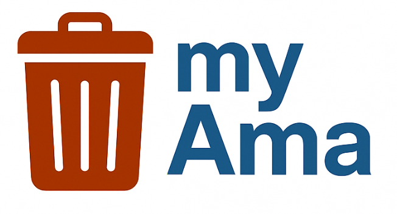

Titolo del progetto:
MyAma – Gestione prenotazioni per rifiuti ingombranti

Componenti del gruppo:
-
Luca Gugliotta – luca.gugliotta@students.uniroma2.eu
-
Samuele De Santis – samuele.desantis@students.uniroma2.eu
Descrizione del dominio applicativo
Il progetto riguarda la realizzazione di un sistema informativo per un portale AMA (ispirato all’Azienda Municipale Ambiente), pensato per consentire ai cittadini la prenotazione del ritiro o la consegna in sede di rifiuti ingombranti.
Il portale permette la gestione completa degli utenti, dei lavoratori, delle sedi AMA, dei veicoli impiegati e delle prenotazioni. Il sistema tiene conto della disponibilità dei lavoratori e dei vincoli logistici, come il codice di avviamento postale (CAP) e la capacità dei veicoli.
Obiettivi funzionali del sistema
Il sistema dovrà permettere di:
-
Consentire la registrazione dei clienti (codice fiscale, nome, cognome, email, password, numero di telefono).
-
Consentire la registrazione dei lavoratori AMA (CID, nome, cognome, data di nascita, ruolo, email, orari lavorativi, numero di telefono).
-
Consentire ai clienti di prenotare un ritiro a domicilio oppure scegliere di portare il rifiuto presso una sede.
-
Calcolare il costo della prenotazione in base alla tipologia del rifiuto e al peso stimato.
-
Permettere l’upload di una foto del rifiuto per valutazioni preliminari.
-
Validare la disponibilità di lavoratori e veicoli per le prenotazioni a domicilio.
-
Permettere la scelta di data, ora e luogo, con limitazioni sul CAP servito.
-
Visualizzare l’elenco delle sedi AMA disponibili in base alla zona del cliente.
-
Gestire un archivio delle tipologie di rifiuti, con relativi costi e categorie.
-
Gestire le assegnazioni dei lavoratori e dei veicoli alle singole prenotazioni.
Obiettivi secondari utili
-
Gestione dello storico delle prenotazioni per ciascun cliente, con visualizzazione di stato, data, costo e modalità (ritiro o consegna).
-
Reportistica interna per AMA, con statistiche su:
- Numero di ritiri per zona o sede;
- Tipologie di rifiuti più frequenti;
- Carico di lavoro medio per lavoratore.
-
Sistema di notifica simulato per comunicare conferme, modifiche o annullamenti delle prenotazioni (tramite flag o campo nel database).
-
Valutazione del servizio da parte del cliente dopo il ritiro, con voto (1–5) e commento.
-
Controllo del carico massimo dei veicoli, per evitare che vengano assegnati a prenotazioni eccedenti la capacità.
-
Gestione dei CAP serviti da ogni sede, per mostrare solo le opzioni valide durante la prenotazione.
Utenti
Ruoli dei rispettivi utenti
- Cliente
- È il cittadino che accede al portale per usufruire dei servizi AMA.
- Può:
- Registrarsi tramite SPID o credenziali classiche.
- Effettuare prenotazioni di ritiro a domicilio o consegna in sede.
- Visualizzare solo le sedi e gli orari compatibili con il proprio CAP.
- Caricare la foto del rifiuto, specificarne tipologia e peso.
- Visualizzare lo storico delle proprie prenotazioni.
- Cancellare una prenotazione (rispettando i limiti di tempo previsti).
- Lasciare una valutazione del servizio dopo il ritiro.
- Non può:
- Accedere ai dati di altri utenti o lavoratori.
- Visualizzare informazioni riservate (es. disponibilità veicoli o altri ritiri).
- Lavoratore AMA
- È il dipendente che gestisce operativamente i ritiri e le consegne.
- È suddiviso in:
- Autista: associato a uno o più veicoli, si occupa dei ritiri a domicilio.
- Visualizza le prenotazioni assegnate nel proprio turno.
- Registra l’avvenuto ritiro o eventuali problemi (es. mancata consegna).
- Operatore di sede: lavora nei punti di raccolta AMA.
- Gestisce le consegne dirette in sede da parte dei clienti.
- Verifica i dati del rifiuto e li registra nel sistema.
- Autista: associato a uno o più veicoli, si occupa dei ritiri a domicilio.
- I lavoratori AMA:
- Non possono modificare le prenotazioni.
- Non hanno accesso ai dati anagrafici dei clienti (salvo CAP e contatti operativi).
- Operano solo negli orari definiti nel loro profilo.
- Amministratori e gestori del database
- Sono figure tecniche con privilegi completi.
- Possono:
- Gestire e aggiornare i dati di sistema.
- Assegnare o revocare ruoli e accessi.
- Monitorare l’attività del sistema.
- Intervenire su malfunzionamenti, errori o frodi.
- Non possono:
- Prenotare ritiri o agire come clienti o lavoratori nel flusso operativo normale.
Parte seconda: Raccolta e analisi dei Requisiti
Il progetto è destinato a due tipi di utenti:
- cittadini di roma
- i veri e propri clienti, questo progetto ha lo scopo di facilitare richieste di prenotazione per gettare rifiuti ingombranti nei modi più semplici e più corretti per l’ambiente
- è previsto che i clienti abbiano una visione ampia di tutti i servizi che può offrire la piattaforma MyAma e che possa interagirvi facilmente
- i lavoratori
- avere una piattaforma che consente a loro di lavorare in maniera uniforme e organizzata
- senza mancanze di dettagli e informazioni
FONTI
📚 Fonti di riferimento (generiche e specifiche)
1. Normative e leggi
-
D.Lgs. 152/2006 – Codice dell’Ambiente
👉 Riferimento normativo nazionale che disciplina la gestione dei rifiuti (compresi quelli urbani e ingombranti).
🔗 Normattiva Codice dell’Ambiente -
Regolamenti AMA
👉 In particolare, quelli relativi a servizi di ritiro rifiuti ingombranti e RAEE (disponibili sul sito ufficiale).
🔗 AMA Roma – Ritiro ingombranti
🔗 Regolamenti di servizio AMA (PDF) -
Regolamenti comunali di Roma Capitale
👉 Documenti e delibere riguardanti la gestione dei rifiuti urbani.
🔗 Deliberazioni Comune di Roma
2. Prassi operative AMA (dedotte e documentate)
-
Le procedure AMA attualmente prevedono:
-
Prenotazioni via telefono o moduli online.
-
Scambi interni non digitalizzati.
-
Gestione manuale di orari e disponibilità (fonte: simulazione utente + sito AMA).
-
Nessuna integrazione diretta con SPID o strumenti avanzati (visibile dalla UX del sito).
-
3. Dati realistici dedotti dall’analisi comparativa
-
Pratiche comuni in aziende di gestione rifiuti municipali (AMA o analoghe).
-
Esperienze utente documentate in forum, reclami, richieste di semplificazione (es. su Reddit, segnalazioni social o portali tipo RomaLido.org).
Operazioni di inserimento
- Inserimento di un nuovo cliente (con SPID o credenziali manuali).
- Inserimento di un nuovo lavoratore AMA (autista o operatore di sede).
- Inserimento di una nuova prenotazione da parte del cliente
- Inserimento della foto del rifiuto nella prenotazione.
- Inserimento dei dettagli del rifiuto: tipologia, peso stimato, categoria.
- Inserimento di una nuova sede AMA nel sistema.
- Inserimento di un nuovo veicolo disponibile per i ritiri.
- Assegnazione automatica o manuale di un lavoratore e di un veicolo a una prenotazione.
- Inserimento di turni/orari lavorativi associati ai dipendenti.
- Inserimento di una valutazione del servizio da parte del cliente.
- Inserimento delle zone (CAP) servite da ciascuna sede. Operazioni di aggiornamento
- Modifica delle informazioni anagrafiche del cliente o del lavoratore.
- Modifica dello stato della prenotazione (attiva, completata, cancellata).
- Aggiornamento dei dati relativi al rifiuto (es. peso modificato dopo verifica).
- Aggiornamento del costo totale sulla base della tipologia e peso.
- Modifica dell’orario o della sede selezionata dal cliente.
- Aggiornamento della disponibilità dei lavoratori in base ai turni.
- Aggiornamento della disponibilità dei veicoli.
- Modifica dei CAP serviti da ciascuna sede.
- Aggiornamento della valutazione inserita (entro limiti temporali).
- Inserimento di eventuali note interne da parte dei lavoratori AMA.
Operazioni di cancellazione
-
Cancellazione di una prenotazione da parte del cliente (entro i termini).
-
Rimozione di un lavoratore non più attivo nel sistema.
-
Cancellazione di un veicolo dismesso o non più utilizzabile.
-
Eliminazione di una sede (solo se non associata a prenotazioni attive).
-
Eliminazione di una tipologia di rifiuto non più gestita.
-
Annullamento di un’associazione lavoratore-veicolo su una determinata prenotazione.
-
Cancellazione di valutazioni non conformi o segnalate.
-
Cancellazione di un cliente su richiesta Operazioni di visualizzazione
-
Visualizzazione delle prenotazioni effettuate da un cliente.
-
Visualizzazione dello storico dei ritiri/consegne da parte di un lavoratore.
-
Visualizzazione delle sedi disponibili in base al CAP inserito.
-
Visualizzazione dei costi associati a ciascuna tipologia di rifiuto.
-
Visualizzazione dei veicoli disponibili e assegnati.
-
Visualizzazione degli orari disponibili per il ritiro/consegna.
-
Visualizzazione dello stato di una prenotazione.
-
Visualizzazione della valutazione media del servizio.
-
Visualizzazione della cronologia completa per scopi di report.
Il sistema MyAma prevede tre classi distinte di utenza, ciascuna con specifici privilegi di accesso e operatività nel sistema:
-
Clienti
-
Accedono tramite SPID o credenziali.
-
Possono effettuare prenotazioni, caricare dati, consultare lo storico, cancellare o modificare le richieste.
-
Hanno visibilità solo sui propri dati.
-
-
Lavoratori AMA
-
Divisi in Autisti (gestiscono i ritiri a domicilio) e Operatori di sede (gestiscono i conferimenti diretti).
-
Possono visualizzare le prenotazioni assegnate e segnarne l’esito.
-
Non possono modificare i dati anagrafici o gestionali.
-
-
Amministratori
-
Gestiscono il sistema, i ruoli, i dati e le configurazioni.
-
Possono accedere a tutte le sezioni, eseguire controlli, backup e manutenzione.
-
Ogni classe ha permessi specifici, impostati per garantire sicurezza, tracciabilità e integrità dei dati.
✅ Assunzioni
- Gli utenti che si registrano come clienti devono essere maggiorenni e far parte dei comuni associati ad AMA.
- Gli autisti sono sempre associati ad almeno un veicolo per effettuare i ritiri.
- I CAP inseriti nelle prenotazioni devono essere tra quelli serviti da almeno una sede.
- Un lavoratore può essere assegnato a una sola prenotazione per fascia oraria.
- Ogni foto del rifiuto viene caricata in formato valido (.jpg, .png) e non supera una dimensione predefinita di 10mb.
- Le prenotazioni possono essere cancellate solo 2 ore prima dell’orario previsto per il ritiro o la consegna.
- I veicoli hanno una capacità massima espressa in kg e non possono eccedere tale limite nella somma dei ritiri assegnati.
🛡️ Vincoli di integrità
1. Vincoli di chiave primaria
- Ogni tabella (utenti, prenotazioni, rifiuti, veicoli, ecc.) ha un identificatore univoco. 2. Vincoli di chiave esterna
- Le prenotazioni fanno riferimento:
- a un cliente registrato (FK su
Clienti); - a una sede AMA (FK su
Sedi); - a un lavoratore (se assegnato);
- a un veicolo (se assegnato). 3. Vincoli di dominio
- a un cliente registrato (FK su
- I CAP devono essere numerici e compresi tra 00010 e 00199 (esempio di range per Roma).
- Il peso del rifiuto deve essere > 0.
- Le email devono contenere il carattere
@. - Le password devono avere almeno 8 caratteri e almeno 1 carattere speciale.
- Le valutazioni devono essere comprese tra 1 e 5. 4. Vincoli di unicità
- Il codice fiscale dei clienti è univoco.
- Il CID dei lavoratori AMA è univoco.
- Il numero targa dei veicoli è univoco. 5. Vincoli temporali
- La data di ritiro/consegna deve essere successiva alla data di prenotazione.
- Una valutazione può essere inserita solo dopo la conclusione del servizio. 6. Vincoli di integrità referenziale
- L’eliminazione di un cliente comporta anche la cancellazione delle sue prenotazioni
- Se una sede viene rimossa, le prenotazioni collegate vanno gestite
SCHEMA E-R
per gli attributi obbligatori *
- Prenotazione
- PK: codice prenotazione
- foto rifiuto
- descrizione oggetto
- Cliente FK
- lavoratore preso FK
- tipo prenotazione
- sede o veicolo
- Data prenotazione
- orario prenotazione
- Veicolo FK
- Sede associata FK
- stato prenotazione
- attiva o completata o terminata
- costo prenotazione
- valutazioni
- Id valutazione
- Codice prenotazione FK
- votazione da 1 a 5
- unique su stato prenotazione
- Cliente
- PK: Codice Fiscale*
- Nome*
- Cognome*
- E-mail*
- Password*
- Data di nascita*
- Indirizzo di domicilio*
- Cap di domicilio*
- Token per accesso con SPID
- numero di telefono
- turni del lavoratore
- id tabella
- FK lavoratore
- data turno
- orario inizio
- orario fine
- pausa inizio
- pausa fine
- Lavoratore
- PK: CID(Codice Identificativo Dipendente)*
- Nome*
- Cognome*
- E-mail*
- Password*
- Data di nascita*
- Ruolo
- in sede
- con veicolo
- Veicolo
- PK: Targa*
- Tipologia
- Carico massimo consentito
- Stato
- disponibile
- in uso
- in riparazione
- FK lavoratore con veicolo
- FK su prenotazione
- Sede Ama
- PK: codice sede
- indirizzo*
- FK tabella orari
- FK lavoratori in sede
- cap serviti dalla sede
- id cap
- Numero CAP
- Codice sede FK
- orari sede ama
- data
- ora
- id sede
Dizionario dei Dati - Schema AMA
- Dizionario dei Dati
| ENTITÀ | DESCRIZIONE | ATTRIBUTI | CHIAVI PRIMARIE |
| Prenotazione | Contiene tutte le informazioni relative a una prenotazione effettuata | - Foto_rifiuto - Descrizione_oggetto - Tipo_prenotazione - Data_prenotazione - Orario_prenotazione - Stato_prenotazione - Costo_prenotazione | Data, Orario, Cliente |
| Valutazione | Valutazioni associate a prenotazioni concluse | - Data_valutazione - Voto_valutazione | Data, Cliente, Prenotazione |
| Cliente | Persona registrata nel sistema come cliente | - Codice_fiscale - Nome - Cognome - Password - Data_di_nascita - Indirizzo_domicilio - CAP_domicilio - Token_SPID - Telefono | Codice_fiscale |
| Lavoratore | Dipendente dell’AMA con ruolo specifico | - Nome - Cognome - Password - Data_di_nascita - Ruolo | E-mail, Data_di_nascita |
| Turno | Contiene i turni assegnati ai lavoratori | - Data_turno - Orario_inizio - Orario_fine - Pausa_inizio - Pausa_fine | Data, Orario_inizio, Orario_fine, lavoratore |
| Veicolo | Veicolo disponibile o in uso per le prenotazioni | - Targa - Tipologia - Carico_massimo - Stato | Targa |
| Sede AMA | Sede operativa AMA con lavoratori assegnati | - Indirizzo - CAP | Indirizzo, CAP |
| Lista CAP | Associa CAP ai territori serviti da ciascuna sede | - CAP | CAP, Sede AMA |
| Orario | Mostra gli orari di ciascuna sede | - Ora - Inizio_pausa - Fine_pausa - Data | Data, Sede AMA |
| Relazione | Descrizione | Entità coinvolte | Attributi |
|---|---|---|---|
| effettuare | Collega ciascun cliente alle prenotazioni da lui effettuate | Cliente – Prenotazione | — |
| ottenere | Una prenotazione può essere associata a una valutazione | Prenotazione – Valutazione | — |
| scrivere | Collega ogni cliente alla valutazione che ha scritto | Cliente – Valutazione | — |
| ingaggiare | Collega ogni prenotazione al lavoratore assegnato | Prenotazione – Lavoratore | — |
| utilizzare | Collega un lavoratore al veicolo assegnato | Lavoratore – Veicolo | — |
| gestire | Collega ciascuna sede AMA alle prenotazioni che gestisce | Sede AMA – Prenotazione | — |
| servire | Specifica quali CAP sono serviti da ogni sede AMA | Sede AMA – Lista CAP | — |
| lavorare | Collega un lavoratore alla sede in cui opera | Lavoratore – Sede AMA | — |
| rispettare | Collega ciascun lavoratore ai turni che deve rispettare | Lavoratore – Turno | — |
| avere | Collega ogni sede AMA ai suoi orari di apertura e chiusura | Sede AMA – Orario | — |
SCHEMA LOGICO
📘 Dizionario delle Entità (schema ristrutturato)
| Entità | Descrizione | Attributi | Chiave primaria |
|---|---|---|---|
| Cliente | Cittadino registrato per effettuare prenotazioni | codice_fiscale, nome, cognome, email, password, data_nascita, indirizzo_domicilio, cap, telefono, token_spid | codice_fiscale |
| Lavoratore | Dipendente AMA, operatore o autista | cid, nome, cognome, email, password, data_nascita, ruolo | cid |
| Veicolo | Veicolo usato dai lavoratori per i ritiri a domicilio | targa, tipologia, carico_massimo, stato, cid_lavoratore* | targa |
| Orari | Orario di apertura e pausa associato a una sede | id_orari, data, ora_inizio, ora_fine, inizio_pausa, fine_pausa, codice_sede* | id_orari |
| Turno | Turno lavorativo assegnato a un lavoratore | id_turno, data, ora_inizio, ora_fine, inizio_pausa, fine_pausa, cid_lavoratore* | id_turno |
| Sede | Sede AMA fisica | codice_sede, indirizzo, cap | codice_sede |
| Lista_CAP | Associazione tra CAP e sedi che li servono | codice_sede*, cap | codice_sede*, cap |
| Prenotazione | Prenotazione effettuata dal cliente per il ritiro o la consegna in sede | codice_prenotazione, foto_rifiuto, descrizione_oggetto, tipologia_servizio, data, orario, stato_prenotazione, costo, codice_fiscale_cliente*, cid_lavoratore*, codice_sede* | codice_prenotazione |
| Valutazione | Feedback fornito dal cliente dopo il servizio | codice_prenotazione*, voto, commento | codice_prenotazione* (PK + FK) |
📗 Dizionario delle Relazioni
| Relazione | Descrizione | Entità Coinvolte | Attributi |
|---|---|---|---|
| effettuare | Un cliente può effettuare più prenotazioni | Cliente – Prenotazione | — |
| ottenere | Ogni prenotazione può avere una valutazione | Prenotazione – Valutazione | — |
| scrivere | Ogni cliente può scrivere una valutazione | Cliente – Valutazione | — |
| ingaggiare | Ogni prenotazione ha un lavoratore assegnato | Prenotazione – Lavoratore | — |
| utilizzare | Ogni lavoratore può essere associato a un veicolo | Lavoratore – Veicolo | — |
| gestire | Ogni sede gestisce più prenotazioni | Sede – Prenotazione | — |
| servire | Una sede serve uno o più CAP | Sede – Lista_CAP | — |
| lavorare | Un lavoratore è associato a una sede | Lavoratore – Sede | — |
| rispettare | Un lavoratore è associato ai turni lavorativi | Lavoratore – Turno | — |
| avere | Una sede ha orari giornalieri di apertura/chiusura | Sede – Orari | — |
✅ Tutti i riferimenti sono coerenti con lo schema E-R fin